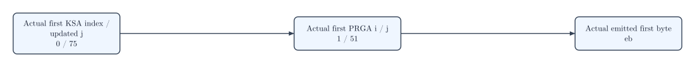
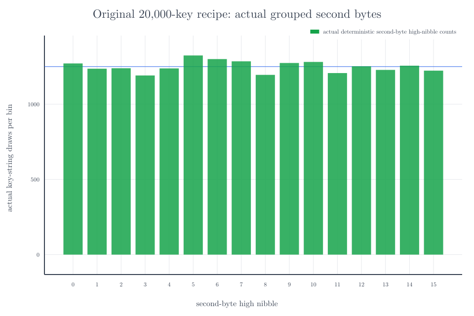
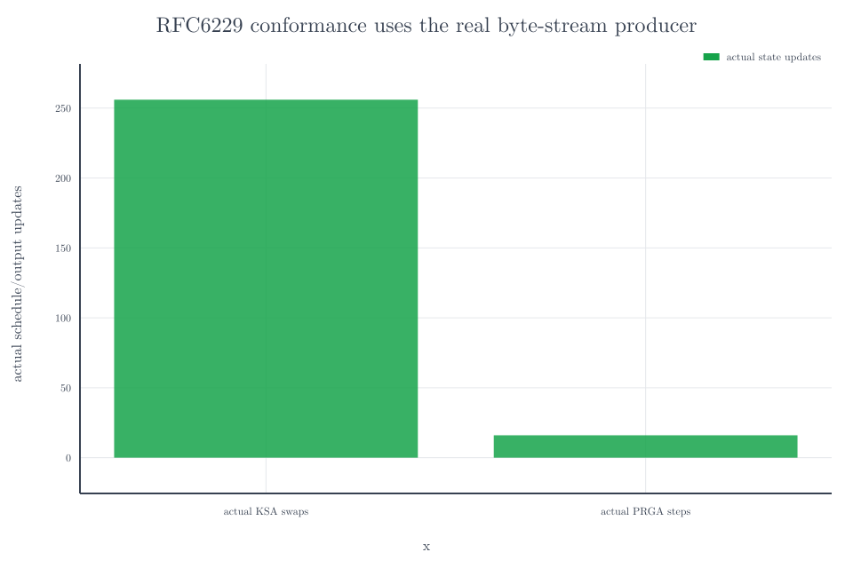
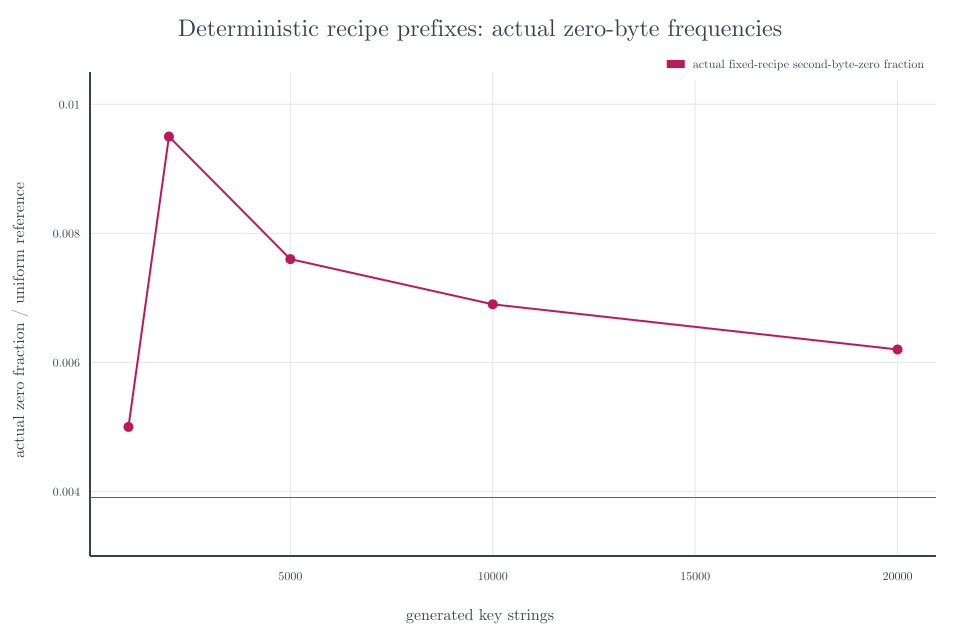

Historical RC4: actual KSA swaps, PRGA bytes and a deterministic bias study
Abstract
A stream cipher combines plaintext with a generated byte stream, so repeating a stream repeats its mask. Historical RC4 builds that stream from a256-byte permutation; its known biases make it unsuitable for modern secure protocols. This report reads actual native schedule/swap/output decisions, retains the original ciphertext vectors and 20,000-key experiment, and correctly labels that key sequence as deterministic rather than random independent draws.
Mechanism and mathematical scope
KSA starts from the identity permutation, updating j by the current permutation entry and a key byte before swapping. PRGA then updates i and j, swaps S[i] and S[j], and reads
Every swap preserves the permutation invariant. XORing the same keystream twice restores the input, explaining round-trip behavior but providing no authentication or key-reuse protection. The native step record comes from the same update used by next(), not a state replay. KSA costs 256 swaps per fresh key and PRGA constant work per byte.
Published RC4 second-byte biases concern a key distribution and cryptanalytic setting. The original experiment instead generates formatted decimal strings with a wrapping integer recipe. Its exact second-byte and grouped histograms are finite outcomes of that recipe; distinct-key counts expose repetitions and do not make the observations iid.
A tiny actual producing history
The table and native concept diagram read the same producing execution. Every block below is a complete editable C++ program.
#include <dm/dm.hpp>
int main() {
namespace a = dm::algorithms;
namespace g = dm::graphics;
std::filesystem::create_directories("build");
auto t = a::rc4_trace("Key", 3);
const auto &k = t.scheduling[0];
const auto &s = t.steps[0];
std::print("\n| actual PRGA byte | i before | j before | i after | j after | actual output index | " "emitted byte |\n| ---: | ---: | ---: | ---: | ---: | ---: | --- |\n");
for (std::size_t i = 0; i < t.steps.size(); ++i) {
const auto &e = t.steps[i];
std::print("| {} | {} | {} | {} | {} | {} | {:02x} |\n", i,
unsigned(e.i_before), unsigned(e.j_before),
unsigned(e.i_after), unsigned(e.j_after),
unsigned(e.output_index), unsigned(e.output));
}
g::Diagram d;
d.node("n0", {0, 0},
std::format("Actual first KSA index / updated j\n{} / {}", k.i,
unsigned(k.j_after)));
d.node("n1", {10, 0},
std::format("Actual first PRGA i / j\n{} / {}", unsigned(s.i_after),
unsigned(s.j_after)));
d.node("n2", {20, 0},
std::format("Actual emitted first byte\n{:02x}", unsigned(s.output)));
d.edge("n0", "n1").edge("n1", "n2");
d.save_svg("build/rc4_tiny.svg");
}| actual PRGA byte | i before | j before | i after | j after | actual output index | emitted byte |
|---|---|---|---|---|---|---|
| 0 | 0 | 0 | 1 | 51 | 129 | eb |
| 1 | 1 | 51 | 2 | 183 | 74 | 9f |
| 2 | 2 | 183 | 3 | 84 | 177 | 77 |

The retained original experiment
#include <dm/dm.hpp>
int main() {
namespace a = dm::algorithms;
namespace g = dm::graphics;
std::filesystem::create_directories("build");
const auto hex = [](const std::string & bytes) {
std::string out;
for (unsigned char c : bytes)
out += std::format("{:02x}", unsigned(c));
return out;
};
std::print("\n| original key | original plaintext | actual native ciphertext hex | exact decrypt |\n| " "--- | --- | --- | --- |\n");
for (const auto & [key, text] : std::vector<std::pair<std::string, std::string>> {
{ "Key", "Plaintext" }, {"Wiki", "pedia"}, {"Secret", "Attack at dawn"}
}) {
const auto cipher = a::rc4_encrypt(key, text);
std::print("| {} | {} | {} | {} |\n", key, text, hex(cipher),
a::rc4_encrypt(key, cipher) == text);
}
auto study = a::rc4_second_byte_study();
std::print("Actual deterministic key draws: {}; distinct strings: {}; actual second-byte zeros: {}; " "fraction: {}.\n",
study.keys, study.unique_keys, study.counts[0],
double(study.counts[0]) / study.keys);
std::vector<double> counts;
std::vector<std::string> labels;
for (std::size_t i = 0; i < 16; ++i) {
counts.push_back(study.groups[i]);
labels.push_back(std::to_string(i));
}
auto p =
g::RPlot::barplot(counts, labels,
"actual deterministic second-byte high-nibble counts");
p.abline_h(double(study.keys) / 16, {37, 99, 235}).title(
"Original 20,000-key recipe: actual grouped second bytes").x_label(
"second-byte high nibble").y_label("actual key-string draws per bin");
p.save_svg("build/rc4_original.svg");
}| original key | original plaintext | actual native ciphertext hex | exact decrypt |
|---|---|---|---|
| Key | Plaintext | bbf316e8d940af0ad3 | true |
| Wiki | pedia | 1021bf0420 | true |
| Secret | Attack at dawn | 45a01f645fc35b383552544b9bf5 | true |
Actual deterministic key draws: 20000; distinct strings: 20000; actual second-byte zeros: 124; fraction: 0.0062.

Explicit controls
#include <dm/dm.hpp>
int main() {
namespace a = dm::algorithms;
namespace g = dm::graphics;
std::filesystem::create_directories("build");
const std::string key("\x01\x02\x03\x04\x05", 5);
const auto t = a::rc4_trace(key, 16);
std::string actual;
for (auto byte : t.bytes)
actual += std::format("{:02x}", unsigned(byte));
const bool vector = actual == "b2396305f03dc027ccc3524a0a1118a8";
const std::string binary("a\0\xff", 3);
const auto encoded = a::rc4_encrypt(key, binary);
const bool roundtrip = a::rc4_encrypt(key, encoded) == binary;
bool empty = false;
try {
a::rc4_keystream("", 0);
} catch (const std::invalid_argument &) {
empty = true;
}
std::print("\n| actual control | outcome |\n| --- | --- |\n| RFC6229 first16 bytes | {} |\n| exact RFC " "byte comparison | {} |\n| embedded-NUL/high-byte round trip | {} |\n| empty key rejected " "before indexing | {} |\n",
actual, vector, roundtrip, empty);
auto p =
g::RPlot::barplot({double(t.scheduling.size()), double(t.steps.size())},
{"actual KSA swaps", "actual PRGA steps"},
"actual state updates");
p.title("RFC6229 conformance uses the real byte-stream producer").y_label(
"actual schedule/output updates");
p.save_svg("build/rc4_controls.svg");
if (!vector || !roundtrip || !empty)
return 1;
}| actual control | outcome |
|---|---|
| RFC6229 first16 bytes | b2396305f03dc027ccc3524a0a1118a8 |
| exact RFC byte comparison | true |
| embedded-NUL/high-byte round trip | true |
| empty key rejected before indexing | true |

Actual selected work and sensitivity
#include <dm/dm.hpp>
int main() {
namespace a = dm::algorithms;
namespace g = dm::graphics;
std::filesystem::create_directories("build");
std::vector<double> x, y;
std::print("\n| deterministic key draws | actual distinct strings | actual second-byte zeros | actual " "zero fraction |\n| ---: | ---: | ---: | ---: |\n");
for (std::size_t n : {1000, 2000, 5000, 10000, 20000}) {
auto s = a::rc4_second_byte_study(n);
x.push_back(n);
y.push_back(double(s.counts[0]) / n);
std::print("| {} | {} | {} | {} |\n", n, s.unique_keys, s.counts[0],
y.back());
}
auto p = g::RPlot::create();
p.lines(x, y, "actual fixed-recipe second-byte-zero fraction", {190, 24, 93}).points(x, y, {190, 24, 93}, 5).abline_h(1. / 256, {37, 99, 235}).title("Deterministic recipe prefixes: actual zero-byte frequencies").y_limits(.003, .0105).x_label("generated key strings").y_label("actual zero fraction / uniform reference");
p.save_svg("build/rc4_work.svg");
}| deterministic key draws | actual distinct strings | actual second-byte zeros | actual zero fraction |
|---|---|---|---|
| 1000 | 1000 | 5 | 0.005 |
| 2000 | 2000 | 19 | 0.0095 |
| 5000 | 5000 | 38 | 0.0076 |
| 10000 | 10000 | 69 | 0.0069 |
| 20000 | 20000 | 124 | 0.0062 |

API and interpretation
The original three classic ciphertext demonstrations remain; RFC6229 adds an official independently specified keystream control. Empty keys now reject before a modulo-by-zero/index operation. Raw byte strings preserve embedded NUL/high bytes. The original key recipe explicitly wraps its 32-bit multiplication before reducing modulo 1,000,000; no random-key claim is made. The grouped first bin contains sixteen byte values, so it is not itself the second-byte-zero frequency. RFC7465 prohibits RC4 cipher suites in TLS. This historical implementation supplies neither entropy acquisition, nonce management nor authentication, and its conformance vectors are not a security endorsement.
Reusable producers, fixtures and histories live in the canonical C++ library. Captured records own their values and do not come from a separate report replay. Selected counters and record/scalar policies are specified at their API boundaries; they are not peak-byte or wall-time budgets. Synthetic structural inputs are controlled fixtures for these mechanisms.
References
- RFC6229: Test Vectors for the Stream Cipher RC4
- RFC7465: Prohibiting RC4 Cipher Suites
- Mantin and Shamir, A Practical Attack on Broadcast RC4 (2001)
Verification: 214 scoped native cases;15 directly instrumented ASan/UBSan
cases;127 executable public examples;567/567 full-file definitions;10
hovers;1340 independent records/58514 checks;frozen compatibility across six
changed legacy families;independent NumPy tensor-training comparisons with
recorded tolerances;12 checkout/installed standalone headers and linked
consumer;41 executed programs and41 inspected figures with both exports.
Receipts: build/mepml-conversion/batch-314-323/.